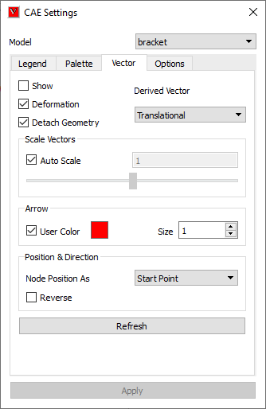
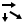
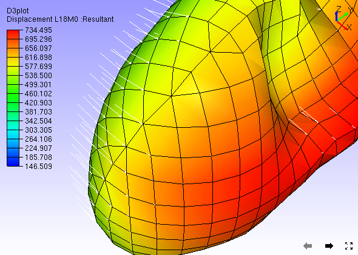
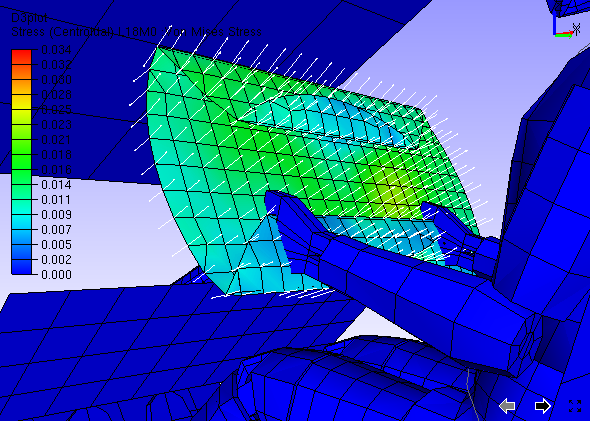
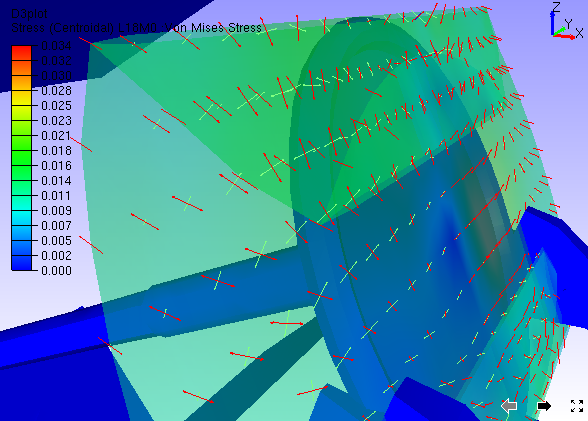
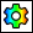

Vector Plot¶
It plots vector for CAE vector type results. It helps user to understand the model more appropriately. User can identify the direction of force, acceleration, velocity, displacement, etc. in each node or element.
Note
VCollab saves one user color for vector plot in view point as well as in CAX. Full tensor derived type may require 3 user color at most.
Vector Plot Settings Panel

Vector Plot |
On/Off switch to plot vectors. |
Derived Vector |
Default derived vector for vector result is Translational and for scalar and tensor is Normals. |
Deformation |
Sets deformed nodal position as starting point of vector. |
Detach Geometry |
Allows user to display vector plot of a part, even if the geometry is hidden. |
Auto Scale |
Enables Auto Scale for vector plot |
Scale Slider Control |
Provides user unconstrained scaling up or down |
User Color |
Allows user to choose a color from palette for vectors. |
Arrow Size |
Allows user to choose any one size out of three. |
Node Position As |
Allows user to set nodal position as either start point or end point. |
Reverse |
Allows user to change the direction of vector. |
Refresh |
Re-generates vectors for visible parts. |
The derived vectors are based on the type of result selected.
Result type |
Available Derived Vectors |
Scalar |
Normals (Nodal or Elemental |
Vector |
Translational (Default) |
Six DOF |
Translational (Default) Rotational Both |
Tensor |
Normals (Default) Minimum Principal Direction Middle Principal Direction Maximum Principal Direction Full Tensor |
How to visualize vector plot?
Click ‘Vector Plot’ icon  from CAE Display toolbar to simply view the vector plot.
Notice that vectors are starting from nodal old position where as model is moved with instances.
Auto scale helps user to view very huge vectors as well as very small ignorable changes inside the viewer.
Click ‘CAE | CAE Settings to modify vector plot setup.
Click ‘Vector Plot Settings’ tab.
By default, Auto Scale is enabled.
Uncheck Auto Scale to scale manually using slider control.
Notice the change in vector size.
Uncheck ‘Deformation’ option to plot the vector without considering deformation of model.
Slider bar is positioned always at center of slider unless user moves.
To scale up, move the slider right side. Slider bar comes to center once user released mouse button up.
To scale down, move the slider left side.
User has no constraints to scale up or down.
User can enter an exact scale value in the edit box at the end of slider and apply the same.
Use ‘Arrow Size’ option to increase the size of arrow.
Click ‘User Color’ option which enables color box straight against option
Click the color box with default white color.
It pops up a color palette.
Choose a color and click ‘Ok’ to apply the color on to the vector plot.
Select ‘Nodal Position As’ either Start Point or End Point. By default, start point is enabled.

Check the ‘Reverse’ check box, if user wants to change the direction of vector.
{kind=link}
{kind=link}
{kind=link}
{kind=link}
{kind=link}
{kind=link}
{kind=link}
{kind=link}
Derived Vectors
Select a tensor result like stress.
Normals will be displayed as vectors as seen below,

Select any other derived vector type, say Mid Principal Direction.
Select any other derived vector type, say Full Tensor.

{kind=link}
How to view vector plot only for visible parts?
Load a cax file
Click CAE Settings icon  from CAE toolbar.
Select Vector Plot tab.
Check ‘Detach Geometry’ if it is unchecked.
Hide a part using product tree.
Notice that vector plot is available even for hidden part.
To disable vector plot for hidden part, go to CAE Settings dialog.
Uncheck ‘Detach Geometry’ option in Vector Plot tab.
Now hide a part using product tree.
Notice that vector plot is available only for visible parts.
{kind=link}
{kind=link}
{kind=link}
{kind=link}